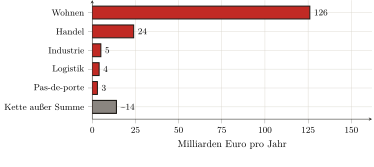

— KI-Übersetzung — Claude Fable 5 (Anthropic)
Dritter Teil — Empirische Messung der Abschöpfung · Kapitel 11
11 Das allgemeine Gesetz und seine Bezifferung
Die beiden vorangegangenen Kapitel haben, jedes für sein Gebiet, gemessen, was die Teile I und II benannt hatten, ohne es schon zu beziffern. Bleibt, die Summe zu ziehen und vor allem das Gesetz auszusprechen, das sie offenbart, denn eine Zahl, so groß sie sei, gilt nur durch den Mechanismus, den sie ans Licht bringt. Dieses Kapitel schließt den empirischen Teil, indem es die beiden Messungen addiert, das Gesetz formuliert, das sie offenbaren, und benennt, was dieses Buch anderen überlässt.
11.1 Die Summe: rund 162 Milliarden Euro im Jahr
Die Rechnung ist schnell gemacht, denn sie hat nur zwei Glieder. Die Wohnrente (der Tribut, den der Bewohner in seiner Miete entrichtet, der tatsächlichen oder der unterstellten) beläuft sich auf 126 Milliarden Euro im Jahr (Kapitel 9). Die Gewerberente (jene, die der Händler, der Industrielle, der Logistiker auf ihre Räume entrichten und in ihre Preise weiterwälzen, bis zum Verbraucher) fügt in der Größenordnung von 36 Milliarden hinzu (Kapitel 10). Insgesamt nähert sich der Bodentribut, der in Frankreich auf den Zugang zum gebauten Raum erhoben wird, 162 Milliarden Euro im Jahr (Abbildung 1.1).

Setzen wir diese Zahl in vertraute Größen ins Verhältnis. Das sind nahezu 6 % des Bruttoinlandsprodukts; das sind, je Steuerhaushalt, in der Größenordnung von 329 Euro im Monat (256 für das Wohnen, 73 in den Preisen weitergewälzt), also mehr als zwei Monate Netto-Mindestlohn (SMIC), die jedes Jahr abgeschöpft werden; das ist schließlich nahezu das Doppelte des Aufkommens der Einkommensteuer.1 Dass eine der Einkommensteuer vergleichbare Summe erhoben wird, außerhalb jeder Abstimmung und ohne produktive Gegenleistung, auf die bloße Tatsache, einen Ort zu bewohnen.
Man wird diese Zahl für das geben, was sie ist, ohne sie zu verhärten. Das Glied des Wohnens ist solide: Es leitet sich aus den Aggregaten des SDES ab (Kapitel 9); das des Gewerbes ist fragiler, denn der gebaute Bestand ist schlecht bekannt, aber es wurde niedrig angesetzt, und es ist wahrscheinlicher eine Untergrenze als eine Obergrenze (Kapitel 10). Daneben hat man eine andere Extraktion benannt und taxiert (die aufgetürmten Margen der Kette, die das Gebaute produziert, etwa fünfzehn Milliarden „reinen“ Profits), sie aber aus der Rechnung herausgehalten, weil sie reproduzierbare Güter belastet, nicht den Zugang zu einem Boden, der es nicht ist. Der Bodentribut seinerseits beträgt durchaus rund 162 Milliarden: eine Größenordnung, eher untertrieben, deren Robustheit weniger wiegt als das, was sie bezeichnet.
11.2 Das allgemeine Gesetz
Denn unter der Vielfalt der Formen ist der Mechanismus ein einziger. Die Wohnungsmiete, die unterstellte Miete des selbstnutzenden Eigentümers, der Gewerbemietvertrag, das Schlüsselgeld, der Zins, den der Erwerber auf den kapitalisierten Preis seines Bodens entrichtet — und, auf dem Lande, die Pacht des Bauern — sind nur die Masken ein und derselben Operation: der Abschöpfung, durch den Inhaber eines Titels auf einen Teil des Raumes, eines Monopoleinkommens auf den Zugang zu diesem Teil, ohne produktive Gegenleistung. Der Boden produziert nicht, er bedingt (Kapitel 1); die Rente ist der Wegzoll dieses Bedingens (Kapitel 1 und 3); sie hat mit dem Kapitalismus ihre vollendete Form angenommen — abtretbar, maximierbar, kapitalisierbar (Kapitel 3 und 4); sie begründet eine Klassenteilung, den Nutzer und den Rentier (Kapitel 5); die Kategorien verschleiern sie (Kapitel 6 und 7), die Theorien rechtfertigen sie (Kapitel 8); und die Messung schließlich bestätigt ihre Masse (Kapitel 9 und 10). Das Gesetz ist nicht aus einem Prinzip deduziert: Es ist die Invariante, die bleibt, wenn man eine nach der anderen alle besonderen Formen abgezogen hat.
Diese Invariante ist nichts Neues; sie steht heute nur auf ihrem Gipfel. Der Tribut auf den Zugang zum Boden ist so alt wie die sesshafte Stadt: Man hat ihn in Uruk entstehen sehen, wo der Tempel, dann der Palast das Land zuteilten und auf seinen Gebrauch abschöpften (Kapitel 2). Was sich geändert hat, ist nicht die Existenz der Erhebung, sondern ihre Form. Die bedingte und unveräußerliche Tenure der Tempelstadt, die gewohnheitsmäßige und nicht maximierbare Abgabe des Lehens sind dem absoluten Eigentum des Code civil gewichen — „dem Recht, die Sachen auf die absoluteste Weise zu genießen und über sie zu verfügen“ —, das den Titel abtretbar und die Rente maximierbar macht. Der Preis hat den Tribut nicht erfunden: Er hat ihn universalisiert und auf sein Maximum getrieben, indem er aus dem Zugang zum Boden eine Ware wie jede andere machte. Die gemessenen 162 Milliarden sind das gegenwärtige, kapitalistische Gesicht des ältesten politischen Problems der sesshaften Gesellschaften: Wie den durch die Zahl verknappten Raum zuteilen?
11.3 Ausblick: die Bauernfrage
Dieses Gesetz findet seine vollendetste Form nicht in der Stadt, sondern auf dem Lande — und damit bezeichnet dieses Buch, was es anderen überlässt. Der Bauer ist vollständiger als jeder andere in den Tribut des Raumes verstrickt, weil er dessen beide Seiten auf sich vereint. Stromaufwärts die Strangulierung: zuerst der Agrarboden (die Pacht ist die ländliche Form desselben Wegzolls), aber auch der Riegel der Saaten, des Kredits, der Maschinen, der Energie, dieser Bedingungen der Produktion, die Oligopole innehaben. Stromabwärts die Vereinnahmung: die Verarbeiter und der große Einzelhandel, die den Zugang zum Markt halten und die Preise festsetzen. Dazwischen, unter dem Zwang eines Freihandels mit Räumen von niedrigeren sozialen und ökologischen Normen, wird die Marge des Produzenten bis auf den Knochen zusammengepresst.
Man wird in diesem Stromaufwärts und diesem Stromabwärts die Unterscheidung wiedererkennen, die Kapitel 10 durchgehalten hat: Die Pacht ist Raumrente im strengen Sinne; die Strangulierung durch die Saaten oder den Handel ist die verwandte, oligopolistische Extraktion, die die Bedingungen der Produktion belastet, ohne im eigentlichen Sinne eine Grundrente zu sein. Beide zu messen, mit derselben Disziplin, wird anderen zufallen. Diese Messung würde vor allem zeigen, warum der Bauer das Gesetz auf seinem höchsten Punkt verwirklicht: weil er, er, zugleich der Nutzer und der Produzent ist, doppelt gefangen — zahlend, um zu dem Land zu gelangen, das er bearbeitet, und beraubt dessen, was er ihm abgewinnt.
Das ist der Sinn der beiden Artikel, die am Ursprung dieser Arbeit stehen2: Dieses Buch hat den Tribut auf den Bewohner und den Arbeiter gemessen; der Tribut auf den Bauern bleibt zu messen. Der eine wie der andere führen zu derselben Frage, die die Messung nur unausweichlich macht. Man weiß jetzt, wie viel auf den Zugang zum Raum erhoben wird, und dass diese Abschöpfung keine produktive Gegenleistung hat. Die Frage hört dann auf, eine buchhalterische zu sein, und wird politisch: nicht mehr „wie viel?“, sondern „muss es so sein?“. Das ist der Gegenstand des letzten Teils.
Bilanz
Teil III hat das Inventar erstellt, das die beiden ersten vorbereitet hatten. Er stellt fest, dass in Frankreich der Zugang zum gebauten Raum mit einem Tribut von rund 162 Milliarden Euro im Jahr belastet ist (die Rente des Wohnens und die des Gewerbes zusammengenommen), erhoben ohne produktive Gegenleistung und wahrscheinlicher unter- als übertrieben. Er zeigt, dass dieser Tribut unter der Vielfalt der Mieten, Mietverträge und Zinsen einem einzigen Gesetz gehorcht: der Abschöpfung eines Monopoleinkommens auf den Zugang zum Boden, vollendete kapitalistische Form einer Erhebung, die so alt ist wie die Stadt. Und er lässt mit Bedacht außerhalb seiner Rechnung, was nicht zu ihr gehört: die Margen der Produktionskette, eine verwandte, aber verschiedene Extraktion. Bleibt, aus diesem Befund seine Konsequenz zu ziehen: Wenn der Tribut nur eine historische Form der Bodenzuteilung unter anderen ist, dann ist eine andere Zuteilung möglich. Das ist es, was Teil IV zu denken unternimmt.
BIP 2023: 2 803 Mrd. €. Steuerhaushalte: 41 Millionen (DGFiP). Monatlicher Netto-SMIC 2026: ≈ 1 443 €. Einkommensteuer: ≈ 92 Mrd. €/Jahr. Das Detail und die Quellen jeder Zeile stehen in den Kapiteln 9 und 10.↩︎
„Erst Essen, dann Miete“ ((Portalez 2024a)) liefert die Matrix des letzten Teils dieses Buches — die Wohnung dem Bewohner; „Paysans et capitalisme“ ((Portalez 2024b)) stellt die Bauernfrage — das Land denen, die es bearbeiten.↩︎